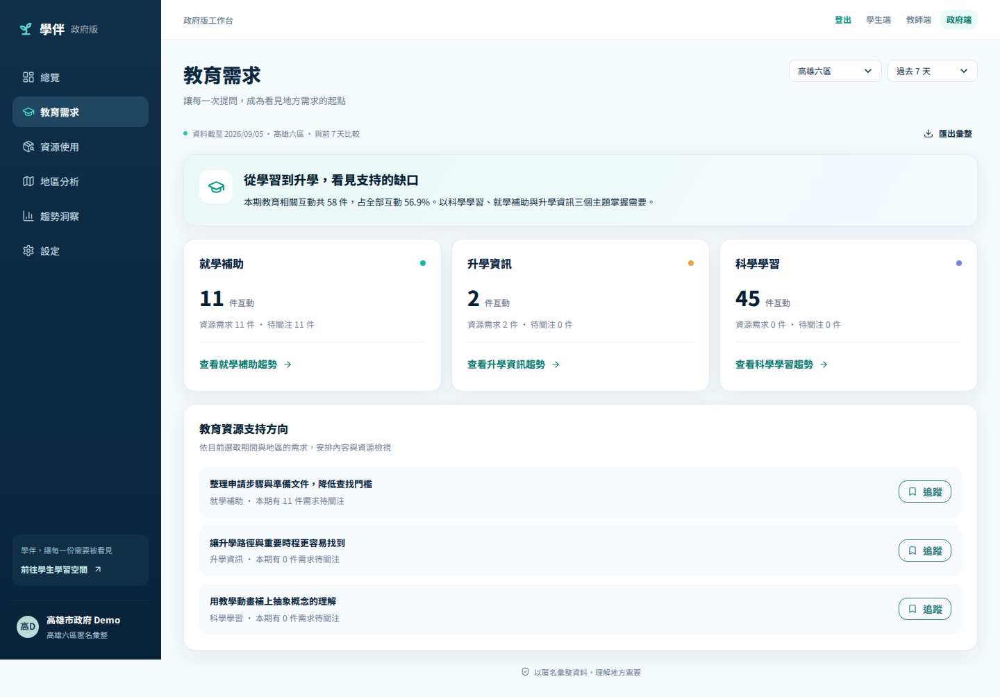
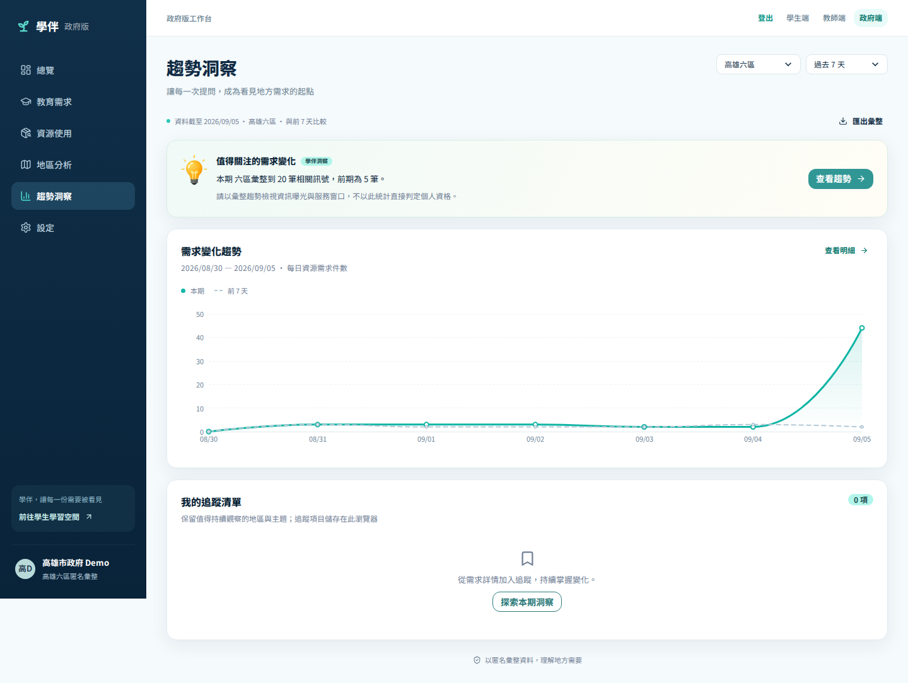

需要掌握地方教育與生活資源缺口的決策者
政府端 · JUDGE GUIDE
政府匿名需求洞察
保護個人隱私，同時讓地方需求被看見。
單一求助不應被公開，但許多相似需求經過最小化與匿名聚合後，可以成為資源配置的重要訊號。政府端的價值是看見趨勢，而不是看見個人。
體驗入口
http://localhost:8080/government.html
WHY IT MATTERS
這個功能解決什麼問題？
從使用者阻力出發，再看它在整體服務中的位置。
需求訊號分散、延遲，且分析過程容易碰觸不必要個資
只以地區、主題、數量與趨勢提供可追蹤的匿名聚合
使用者價值路徑
1Primary Insight2移除個人識別3地區／主題聚合4期間比較5趨勢洞察6資源配置討論
SDD 設計依據
Frontend SDD §§25–30：政府工作台是 Pitch 核心，但不得顯示姓名、完整對話或家庭個資。
Backend SDD §§39–46：Government API 只能讀 Insight Events，不得讀 Raw Messages。
QUICK START
開始前，先知道角色、入口與成功條件
準備事項
- 從政府入口建立政府角色 session
- 工作台為 Desktop First
- 政府角色不能讀學生 Profile、對話或上傳圖片
- 追蹤與偏好目前保存在此瀏覽器 localStorage
完成後，你應該能夠
- 閱讀整體 KPI 與熱門需求
- 切換期間與行政區
- 查看地區熱度與需求趨勢
- 追蹤主題並匯出相同口徑摘要
互動體驗：匿名地區需求只有聚合欄位
旗山區 · 聚合資料，不含姓名或原始對話
GUIDED WALKTHROUGH
先完成入口與核心理解
點截圖上的號碼可以標記進度；PDF 版本可直接依文字操作。
1
先讀總覽 KPI
怎麼做：查看互動事件、資源需求、待關注需求與熱門主題占比。
會看到：總覽只呈現計數與聚合；不會出現姓名、user_id 或對話內容。
2
切換期間與需求主題
怎麼做：在教育需求與資源使用分頁切換期間、地區，查看就學、升學、科學學習或資源類別。
會看到：KPI、卡片、圖表與匯出都使用同一次篩選範圍。

GUIDED WALKTHROUGH
從操作走到可見的結果
這兩步是評審最容易判斷產品價值的畫面。
3
比較地區熱度
怎麼做：進入地區分析，查看六區排序；點行政區打開主題與前期變化詳情。
會看到：地圖是概念視覺，需求件數與排序來自聚合 API，不宣稱是真實 GIS。

4
追蹤趨勢並匯出
怎麼做：在趨勢洞察查看本期與前期，將值得關注的地區／主題加入追蹤，或匯出彙整 CSV。
會看到：追蹤、圖表與 CSV 仍只有匿名群組資料。

OUTCOME & TRUST
完成後看見什麼？資料又如何被保護？
可驗證成果
- 能掌握需求量與熱門主題
- 能比較期間與行政區差異
- 能追蹤快速升高的匿名需求
- 能匯出與畫面同口徑的聚合資料
評審值得注意
- 政府端完全不需要、也不能看到原始對話。
- 所有圖表與 CSV 共用同一組篩選聚合。
- 產品把個人協助延伸成可驗證的地方需求訊號。
資料路徑
1Primary Insight2Region＋Topic3SQL 聚合4Count／Percentage5Trend6匿名 Dashboard／CSV
隱私原則
- Raw Conversation ≠ Government Insight。
- 政府 API 不回傳 user_id、暱稱、conversation_id、家庭細節或原始訊息。
- 只允許 Region、Topic、Count、Percentage、Trend 與 Aggregated Insight。
目前 Demo 邊界目前數據是固定 Demo dataset，不代表真實政策成效。地圖是區域概念圖，不是 GIS 邊界或即時災情圖。洞察是值得調查的訊號，仍需搭配正式統計與行政程序。
TRY IT YOURSELF
30 秒看懂，3 分鐘親手完成
30 秒展示腳本
指出 KPI 與熱門需求
切到地區分析並選旗山區
查看本期／前期趨勢
停在匿名欄位與匯出按鈕
常見狀況
找不到學生姓名
這是正確結果：政府端設計上不提供個人資料。
地圖與真實行政邊界不同
目前是概念圖，重點是匿名聚合與排序。
追蹤換瀏覽器消失
政府追蹤與偏好目前保存在該瀏覽器。